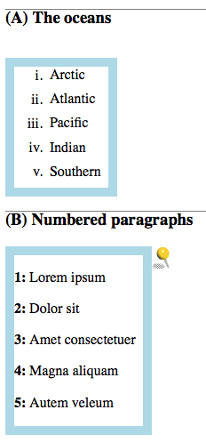

Challenge solutions
This page provides solutions to the challenges posed in the CSS Getting Started tutorial. These are not the only possible solutions. The sections below correspond to the titles of the tutorial sections.
Why use CSS
The challenges on page Why use CSS are:
Colors
- Challenge
-
Without looking up a reference, find five more color names that work in your stylesheet.
- Solution
-
CSS supports common color names like
orange,yellow,blue,green, orblack. It also supports some more exotic color names likechartreuse,fuschia, orburlywood. See CSS Color value for a complete list as well as other ways of specifying colors.
How CSS works
The challenges on page How CSS works are:
DOM inspector
- Challenge
-
In DOMi, click on a STRONG node. Use DOMi's right-hand pane to find out where the node's color is set to red, and where its appearance is made bolder than normal text.
- Solution
-
In the menu above the right-hand pane, choose CSS Rules. You see two items listed, one that references an internal resource and one that references your stylesheet file. The internal resource defines the font-weight property as
bolder; your stylesheet defines the color property asred.
Cascading and inheritance
The challenges on page Cascading and inheritance are:
Inherited styles
- Challenge
-
Change your stylesheet so that only the red letters are underlined.
- Solution
-
Move the declaration for underlining from the rule for
<p>to the one for<strong>. The resulting file looks like this:p { color: blue; } strong { color: orange; text-decoration: underline; }
Later sections of this tutorial describe style rules and declarations in greater detail.
Selectors
The challenges on page Selectors are:
Second paragraph blue
- Challenge
-
Without changing your HTML file, add a single rule to your CSS file that keeps all the initial letters the same color as they are now, but makes all the other text in the second paragraph blue.
- Solution
-
Add a rule with an ID selector of
#secondand a declarationcolor: blue;, as shown below:#second { color: blue; }A more specific selector,
p#secondalso works.
Both paragraphs blue
- Challenge
-
Now change the rule you have just added (without changing anything else), to make the first paragraph blue too.
- Solution
-
Change the selector of the new rule to be a tag selector using
p:p { color: blue; }
The rules for the other colors all have more specific selectors, so they override the blue of the paragraph.
Readable CSS
Commenting out a rule
- Challenge
-
Comment out part of your stylesheet, without changing anything else, to make the very first letter of your document red.
- Solution
-
One way to do this is to put comment delimiters around the rule for
.carrot:/* .carrot { color: orange; } */
Text styles
Big initial letters
- Challenge
-
Without changing anything else, make all six initial letters twice the size in the browser's default serif font.
- Solution
-
Add the following style declaration to the
strongrule:font: 200% serif;If you use separate declarations for
font-sizeandfont-family, then thefont-stylesetting on the first paragraph is not overridden.
Color
Three-digit color codes
- Challenge
-
In your CSS file, change all the color names to 3-digit color codes without affecting the result.
- Solution
-
The following values are reasonable approximations of the named colors:
strong { color: #f00; /* red */ background-color: #ddf; /* pale blue */ font: 200% serif; } .carrot { color: #fa0; /* orange */ } .spinach { color: #080; /* dark green */ } p { color: #00f; /* blue */ }
Content
The challenges on page are:
Add an image
- Challenge
-
Add a one rule to your stylesheet so that it displays the image at the start of each line.
- Solution
-
Add this rule to your stylesheet:
p::before { content: url("yellow-pin.png"); }
Lists
The challenges on page Lists are:
Lower Roman numerals
- Challenge
-
Add a rule to your stylesheet, to number the oceans using Roman numerals from i to v.
- Solution
-
Define a rule for list items to use the
lower-romanlist style:li { list-style: lower-roman; }
Capital letters
- Challenge
-
Change your stylesheet to identify the headings with capital letters in parentheses.
- Solution
-
Add a rule to the body element (parent of the headings) to reset a new counter, and one to display and increment the counter on the headings:
/* numbered headings */ body { counter-reset: headnum; } h3::before { content: "(" counter(headnum, upper-latin) ") "; counter-increment: headnum; }
Boxes
The challenges on page Boxes are:
Ocean border
- Challenge
-
Add one rule to your stylesheet, making a wide border all around the oceans in a color that reminds you of the sea.
- Solution
-
The following rule achieves this effect:
ul { border: 10px solid lightblue; width: 100px; }
Layout
The challenges on page Layout are:
Default image position
Fixed image position
- Challenge
-
Change your sample document,
doc2.html, adding this tag to it near the end, just before</BODY>:<IMG id="fixed-pin" src="Yellow-pin.png" alt="Yellow map pin">Predict where the image will appear in your document. Then refresh your browser to see if you were correct. - Solution
-
The image appears to the right of the second list. 
- Challenge
-
Add a rule to your stylesheet that places the image in the top right of your document.
- Solution
-
The following rule achieves the desired result:
#fixed-pin { position: fixed; top: 3px; right: 3px; }
Tables
The challenges on page Tables are:
Borders on data cells only
Media
The challenges on page Media are:
Separate print style file
- Challenge
-
Move the print-specific style rules to a separate CSS file and import them into your
style4.cssstylesheet. - Solution
-
Cut and paste the lines between
/* print only */and/* end print only */into a file namedstyle4_print.css. In style4.css, add the following line at the beginning of the file:@import url("style4_print.css") print;
Heading hover color
- Challenge
-
Make the headings turn blue when the mouse pointer is over them.
- Solution
-
The following rule achieves the desired result:
h1:hover { color: blue; }
JavaScript
Move box to the right
- Challenge
-
Change the script so that the square jumps to the right by 20 em when its color changes, and jumps back afterwards.
- Solution
-
Add lines to modify the
margin-leftproperty. Be sure to specify it asmarginLeftin JavaScript. The following script achieves the desired result:// JavaScript demonstration function doDemo(button) { const square = document.getElementById("square"); square.style.backgroundColor = "#fa4"; square.style.marginLeft = "20em"; button.setAttribute("disabled", "true"); setTimeout(clearDemo, 2000, button); } function clearDemo(button) { const square = document.getElementById("square"); square.style.backgroundColor = "transparent"; square.style.marginLeft = "0em"; button.removeAttribute("disabled"); }
SVG and CSS
Change color of inner petals
- Challenge
-
Change the stylesheet so that the inner petals all turn pink when the mouse pointer is over any one of them, without changing the way the outer petals work.
- Solution
-
Move the position of the :hover pseudo-class from a specific petal, to all petals
#inner-petals { --segment-fill-fill-hover: pink; } /* Non-standard way for some older browsers */ #inner-petals:hover .segment-fill { fill: pink; stroke: none; }